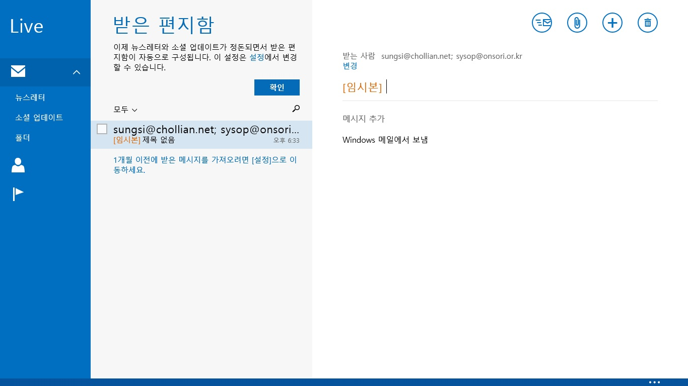
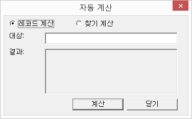
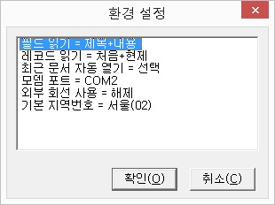

메일 클라이언트를 사용하여 메일을 발송합니다.
선택된 레코드에 이메일 정보가 있을 경우, '받는 사람' 편집창에 이메일 주소가 자동으로 입력됩니다.
* 그룹 창에서 그룹을 선택한 경우 그룹에 속한 모든 이메일이 '받는 사람' 편집창에 자동으로 입력됩니다.
원하는 그룹의 모든 구성원에게 메일을 보냅니다.
다음의 과정에 따라 그룹 메일을 보낼 수 있습니다.
① '그룹 메일 보내기' 기능을 실행하면, '그룹 선택' 대화상자가 출력됩니다.
② 그룹 목록에서 원하는 그룹을 선택한 뒤, '확인' 버튼을 누릅니다.
③ 메일 클라이언트가 자동 실행되며, '보내는 사람' 편집창에 그룹에 속한 구성원의 메일 주소가 자동으로 입력됩니다.

④ 메일 클라이언트에서 메세지를 작성한 후 발송을 합니다.
* 이 기능을 사용하기 위해서는 아웃룩이나 MS-OFFICE 아웃룩과 같은 메일 클라이언트의 계정 설정이 필요합니다.
계정 설정에 대해서는 삼성맹인컴퓨터교실의 강의를 참고하십시요.
컴퓨터에 장착된 모뎀을 이용하여 전화를 걸어줍니다.
다음 순서에 따라 자동으로 전화를 걸어줍니다.
① <전화 번호> 콤보상자에 직접 전화번호를 입력하거나, 화살표를 사용해 전화번호를 선택합니다.
선택된 레코드에 전화번호 형식을 가진 필드가 있는 경우 자동으로 전화번호가 입력됩니다.
② '연결' 버튼을 눌러 전화걸기를 시작합니다.
③ 전화가 연결되면 전화기의 수화기를 들고 '해제' 버튼을 눌러 센스 주소록에서의 연결을 종료합니다.
* 모뎀이 장착되어 있지 않는 경우 이 기능은 사용할 수 없으며, 환경설정에서 모뎀의 포트를 정확히 지정해 주어야 합니다.
숫자 필드에 들어있는 데이터들의 합계와 평균을 구합니다.
레코드 계산과 찾기 계산의 두 가지 방식이 있습니다.

1. 레코드 계산: 지정한 레코드를 대상으로 계산 기능을 실행합니다.
① 라디오 버튼에서 '레코드 계산'을 선택합니다.
② '대상' 편집창에 계산을 원하는 레코드 번호를 입력합니다. 여러 레코드를 빈칸으로 구분하여 입력하거나 대쉬(-)를 이용하여 레코드 범위를 입력할 수도 있습니다.
예: '1 2 3 4 5', '1-5'
③ <Enter>키를 누르거나 '계산' 버튼을 누르면 '결과' 편집창에 계산 결과가 출력됩니다.
2. 찾기 계산: 주어진 문자열이 들어 있는 레코드를 대상으로 계산합니다.
① 라디오 버튼에서 '찾기 계산'을 선택합니다.
② '대상' 편집창에 찾기를 원하는 문자열을 입력합니다.
③ <Enter>키를 누르거나 '계산' 버튼을 누르면 '결과' 편집창에 계산 결과가 출력됩니다.
* 이 기능을 사용하기 위해서는 필드 중 반드시 하나 이상의 숫자 필드가 존재해야 합니다.
센스 주소록의 세부 옵션을 설정합니다.

각 항목의 설정을 변경하려면, 원하는 항목에 위치한 다음 <Space>키나 <Shift-Space>키를 누릅니다. 변경 후에는 '확인' 버튼을 눌러 설정을 적용하도록 합니다.
세부 옵션은 다음과 같습니다.
1. 필드 읽기: 기본 창에서 <Tab>, <Shift-Tab>키를 눌러 필드 단위 이동을 할 때 필드 내용을 읽는 방식을 선택합니다.
① 내용 읽기: 필드의 내용만을 읽어줍니다.
② 제목+내용: 필드 이름을 읽은 후 필드의 내용을 읽습니다.
2. 레코드 읽기: 기본 창에서 레코드 단위 이동을 할 때(처음, 마지막, 이전, 다음) 등 레코드를 읽어주는 방식을 선택합니다.
① 현재: 현재 포커스된 필드만을 읽습니다.
② 처음+현재: 처음 필드를 먼저 읽은 후 현재 필드를 읽습니다.
③ 전체: 레코드의 모든 필드를 차례로 읽어줍니다.
3. 최근 문서 자동 열기: 센스 주소록이 실행될 때 마지막 사용했던 파일을 자동으로 불러올 것인지 여부를 선택합니다.
4. 모뎀 포트: 사용할 모뎀의 포트를 선택합니다. 전화걸기 기능을 사용하고자 한다면 반드시 이 곳에서 정확한 모뎀 포트를 설정해 주어야 합니다.
5. 외부 회선 사용: 전화를 하기 위해 외부 회선을 사용해야 하는지 여부를 설정합니다. 선택하면 전화를 걸 때 자동으로 '9'번을 입력해 줍니다.